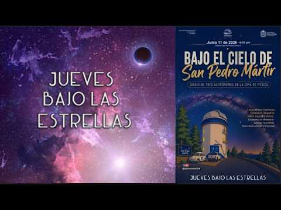
1:25:40PUBLICACIÓN ·
Under the skies of San Pedro Mártir
With Leidy Johana Contreras, Maria Alejandra Lemus, Eduardo Delgadillo
Watch the talk ↗CONVERSATIONS THAT TAKE US FURTHER
Astronomy, questions and encounters. A library to revisit the voices that bring the universe closer.
Thursdays under the Stars is the Observatory’s public lecture series. Its meetings bring astronomy to a wider audience and may include telescope observing when weather permits.
Institutional information lists talks on Thursdays at 6:30 p.m. at the OAN auditorium in Bogotá. Confirm each session through the official channels before attending.
Source: Faculty of Science, UNAL ↗
TALK LIBRARY
A selection of 19 talks from the official channel, with thumbnails published by the Observatory. Search by title or guest and filter by year. Dates refer to YouTube publication, which may be later than the talk itself.

1:25:40PUBLICACIÓN ·
With Leidy Johana Contreras, Maria Alejandra Lemus, Eduardo Delgadillo
Watch the talk ↗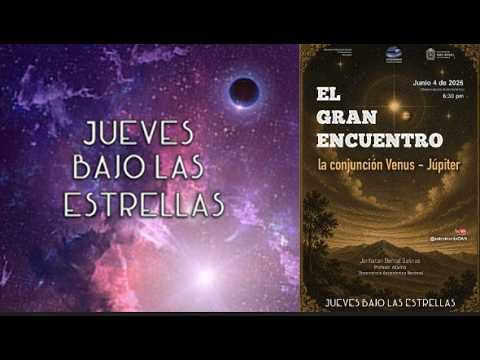
1:15:34PUBLICACIÓN ·
Invitado_ Jonhatan Bernal (OAN Adjunct Professor)
Watch the talk ↗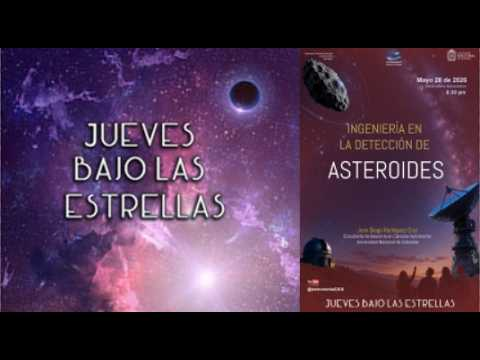
1:24:42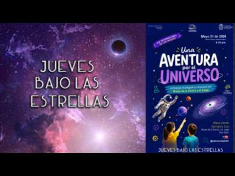
56:52PUBLICACIÓN ·
Wilson Camilo Sarmiento Caro
Watch the talk ↗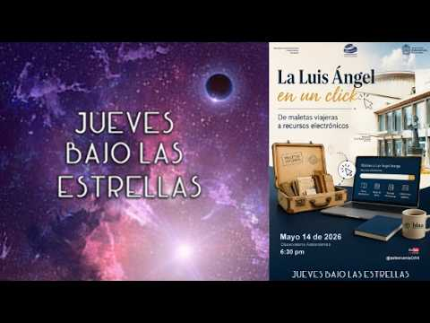
1:18:48PUBLICACIÓN ·
Guests: Luis Ángel Arango Library support staff
Watch the talk ↗ 1:10:38
1:10:38PUBLICACIÓN ·
Guests: Johnatan Bernal Hernán Guerrero Joar Buitrago Juan Esteban Agudelo Santiago Vargas
Watch the talk ↗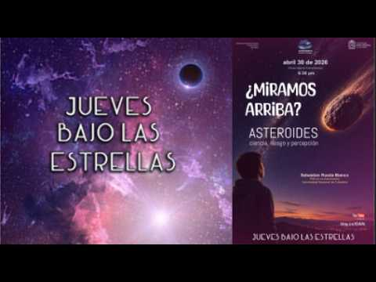
1:32:13PUBLICACIÓN ·
Guests: Sebastian Rueda Blanco
Watch the talk ↗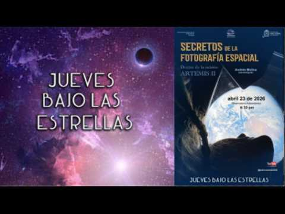
1:40:58PUBLICACIÓN ·
Guests: Andrés Molina
Watch the talk ↗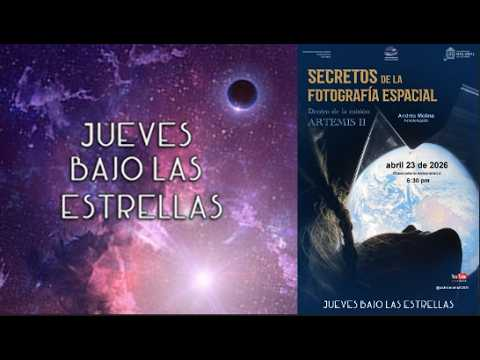
1:46:24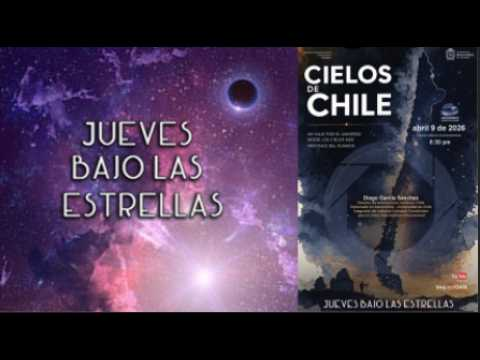
1:12:14PUBLICACIÓN ·
Guests: Diego Garcia Sanchez
Watch the talk ↗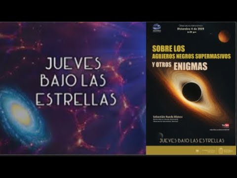
1:29:56PUBLICACIÓN ·
Guests: Sebatian Rueda Blanco
Watch the talk ↗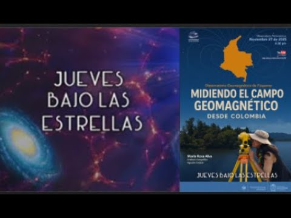
1:05:27PUBLICACIÓN ·
Guest: María Rosa Alva, IGAC
Watch the talk ↗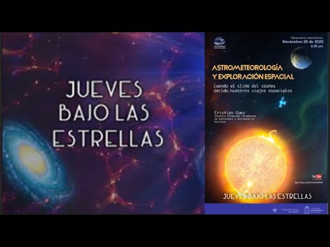
1:45:50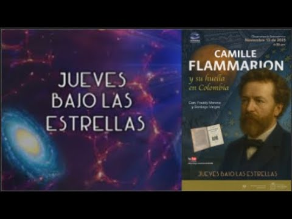
1:40:06PUBLICACIÓN ·
Guests: Santiago Vargas y Freddy Moreno
Watch the talk ↗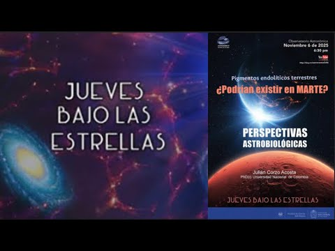
1:01:01PUBLICACIÓN ·
Guests: Julian Corzo
Watch the talk ↗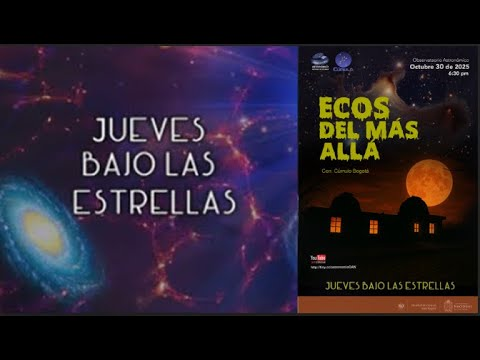
1:35:59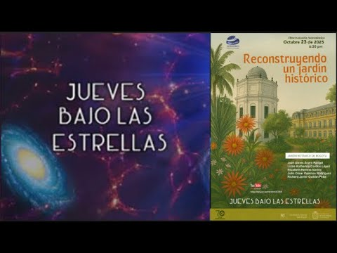
1:22:30PUBLICACIÓN ·
Guests: Bogotá Botanical Garden, Juan Alexis Acero, Lizzie Katherine Cordon, Elizabeth Herrera, Julio Cesar Palacios, Richard Javier Quitián.
Watch the talk ↗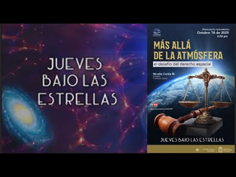
1:43:24PUBLICACIÓN ·
Guests: Nicolás Cortés
Watch the talk ↗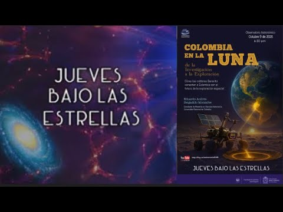
1:05:27PUBLICACIÓN ·
Guests: Eduardo Andres Delgadillo
Watch the talk ↗No matching talks. Try another title, guest or year.
Catalogue consulted on September 24, 2026. Videos open on YouTube and retain their original language.